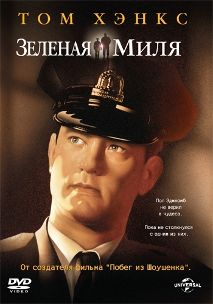
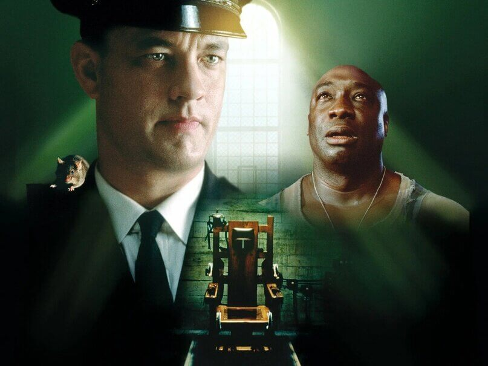

Стражи галактики

| Год |
2014 |
| Страна |
США |
| Жанр |
Боевик/Научная фантастика |
| Режиссер |
Джеймс Ганн |
Отважному путешественнику Питеру Квиллу попадает в руки таинственный артефакт, принадлежащий могущественному и безжалостному злодею Ронану, строящему коварные планы по захвату Вселенной. Питер оказывается в центре межгалактической охоты, где жертва — он сам.
Человек-паук.Возвращение домой


| Год |
2017 |
| Страна |
СШA |
| Жанр |
Боевик/Научная фантастика |
| Режиссер |
Джон Уоттс |
После исторической встречи с командой Мстителей Питер Паркер возвращается домой, стараясь зажить обычной жизнью под опекой своей тети Мэй. Но теперь за Питером приглядывает еще кое-что… Тони Старк видел Человека-Паука в деле и должен стать его наставником. Когда новый злодей Стервятник угрожает уничтожить все, что дорого Питеру, приходит время доказать всем, что такое настоящий супергерой.
Зеленая миля


| Год |
1999 |
| Страна |
США |
| Жанр |
Криминал/Фэнтези |
| Режиссер |
Фрэнк Дарабонт |
Обвиненный в страшном преступлении, Джон Коффи оказывается в блоке смертников тюрьмы «Холодная гора». Вновь прибывший обладал поразительным ростом и был пугающе спокоен, что, впрочем, никак не влияло на отношение к нему начальника блока Пола Эджкомба, привыкшего исполнять приговор.